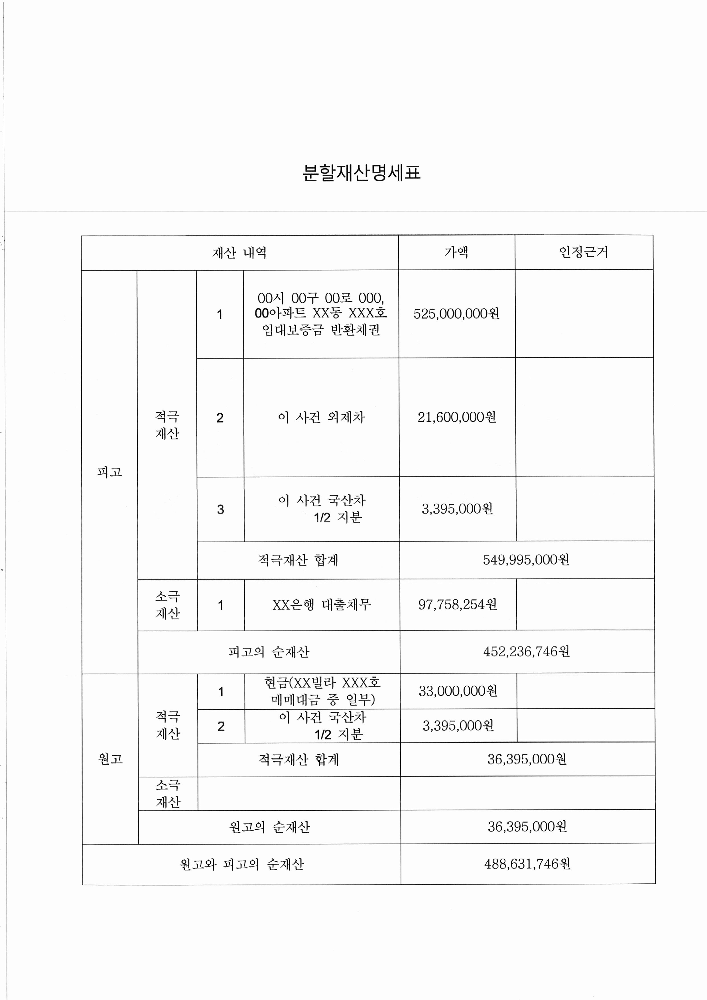
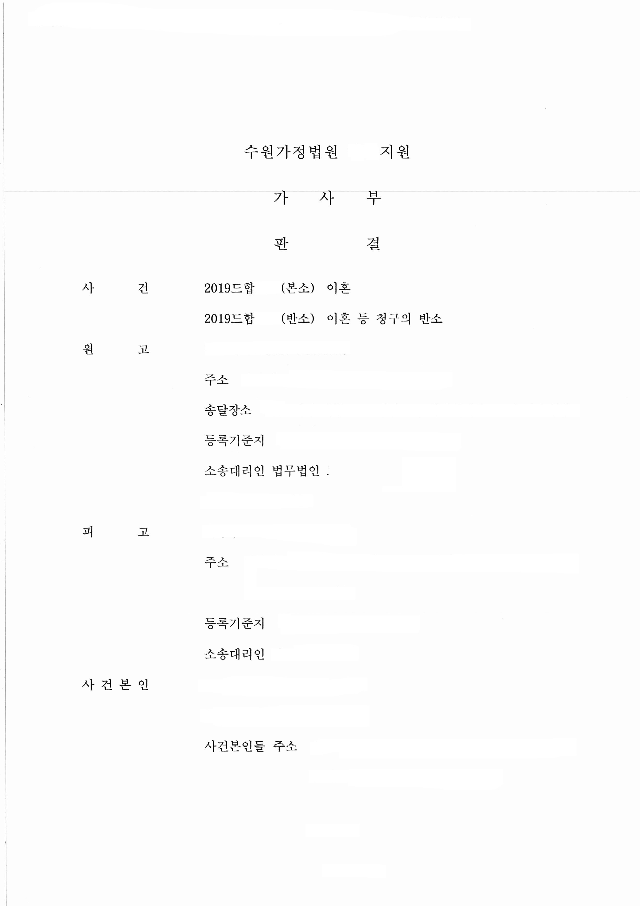
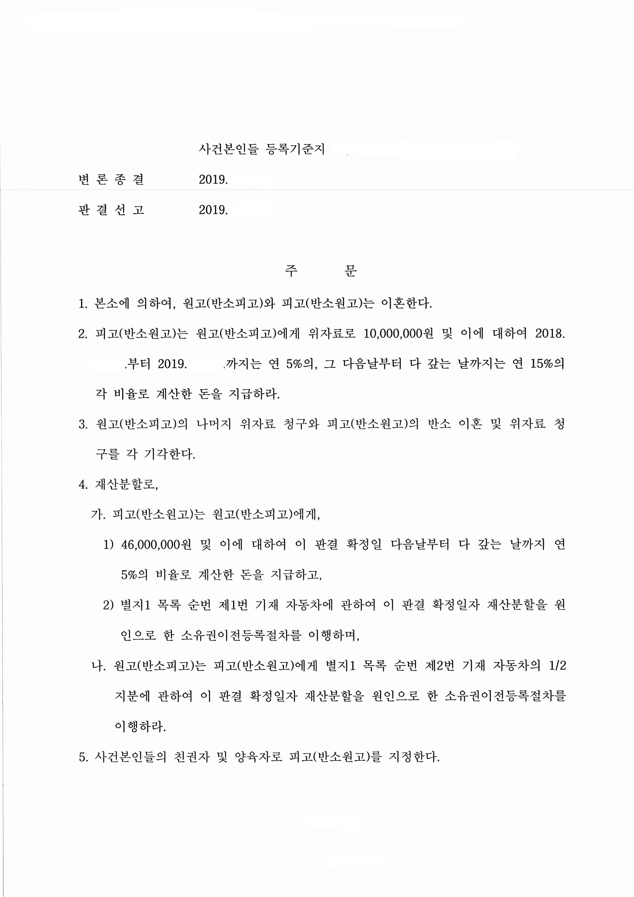
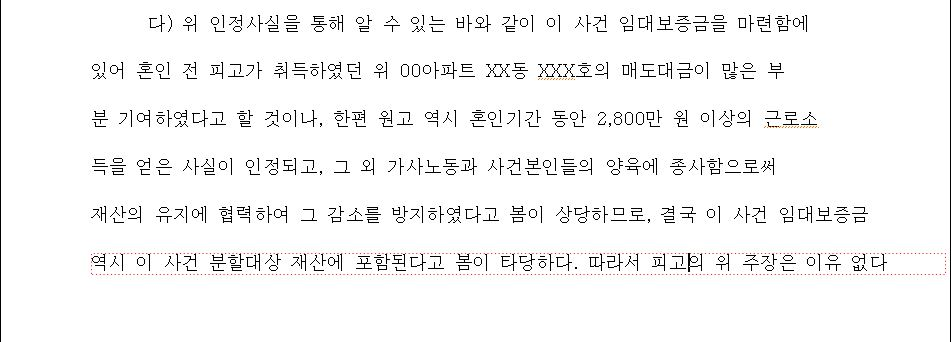
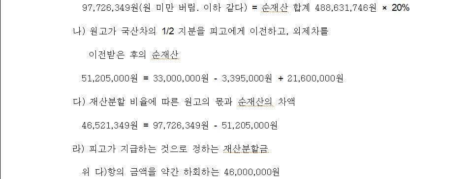

안녕하세요.
법무법인 글로리
대표 변호사 이아무 입니다.
오늘 소개해드릴 사례는
상대방의 혼인 전 재산(특유재산)을
부부 공동재산으로 재산분할 대상에
포함시킴으로서 성공적인 결과를
이끌어 낸 재산분할 사례입니다.
원고와 피고는 2010년 혼인신고를 마친
법률상 부부로서 슬하에
미성년 자녀 2명이 있었습니다.
원고와 피고는 2017년도부터 별거하였고,
피고의 부정행위, 시댁과 극심한 갈등, 가정생활 소홀함,
1년 가까운 별거로 인해 실질적인 파탄 등을 이유로
이혼 및 재산분할, 위자료, 양육비를
청구하는 이혼소송을 진행하게 되었습니다.
1. 기본적인 사항
① 혼인 기간 : 8년
② 원고 : 회사원(연 소득 약 2,800만 원)
피고 : 개인사업자(연 소득 약 9,000만 원)
③ 미성년 자녀 여부 2명
2. 분할의 대상이 된 재산

3. 판결 결과
재산분할 비율 : 원고 20% 피고 80%
피고는 원고에게 46,000,000원을 지급하고,
외제차(가액 : 21,600,000원)에 대해 소유권이전등록 절차를 이행하며,
원고는 피고에게 국산차의 1/2 지분에 대해
소유권이전등록 절차를 이행하는 판결을 받았습니다.


4. 위와 같은 결과가 나오게 된 원인
위 판결은 재산분할의 비율이 중요한 판결은 아닙니다.
그 이유는 위 재산분할 명세표 중
피고의 순재산 452,236,746원 중 3억 500만 원은
피고가 원고와의 혼인 전부터
가지고 있었던 부동산을 혼인 중
매각한 금원이기 때문입니다.
이 소송에서 피고는
혼인 전부터 가지고 있었던 부동산을
매각한 금원이므로 적어도 3억 5백만 원은
피고의 특유재산이 되어야 한다
(재산분할 대상에서 제외되어야 한다)고 주장하였습니다.
그러나 저희는 원고를 대리하여,
'피고가 혼인 전 취득한 재산으로
특유재산에 해당한다 하더라도
부부가 상당 기간 혼인관계를 유지하며
다른 일방이 그 재산 유지 및 증가에 기여한 경우
이 역시 분할 대상이 된다'
라는 대법원 판결에 비추어,

비록 위 금원이
피고가 혼인 기간 전부터
가지고 있었던 금원이었다 할지라도,
원고가 혼인 기간 동안
가사와 양육을 도맡아 하면서도
연 2,800만원 이상의 소득을 벌어들였음을
입증하여 위 재산의 유지 증식에
기여하였다는 점을 주장하였고,
재판부는 이를 받아들여
피고가 혼인 전부터
가지고 있었던 재산 또한
분할 대상에 포함시켰습니다.
만약 피고의 주장이 받아들여졌다면,
분할 대상이 되는 총재산의 가액은 3억 5백만 원을
공제한 1억 8천여만 원이 되었을 것이고,
위 재산분할 비율이 동일하게 적용된다면
원고가 분할 받을 수 있는 재산은
3천6백만 원 정도밖에 되지 않았을 것입니다
(원고가 이미 3천3백만 원을
소유하고 있었으므로 실제 피고로부터
지급받을 부분은 1천만 원 이하가 되었을 것).
그러나 위 금원을 분할 대상 재산에 포함시킴으로써,
원고는 본인이 보유하던 현금 33,000,000원 및
피고에게 지급받을 4천6백만 원,
그리고 외제차량 가액 약 2천1백만 원에 해당하는
총 1억 원에 해당하는 재산에 대하여
분할 받을 수 있었습니다.

tip) 혼인 기간이 길다면,
혼인 전 재산도
재산분할 청구의 대상이 될 수 있습니다.
그러나 그 가능 여부는
당사자의 주장 입증에 따라 달라지므로,
좋은 변호사를 선임하여
함께 하시길 권유 드립니다.